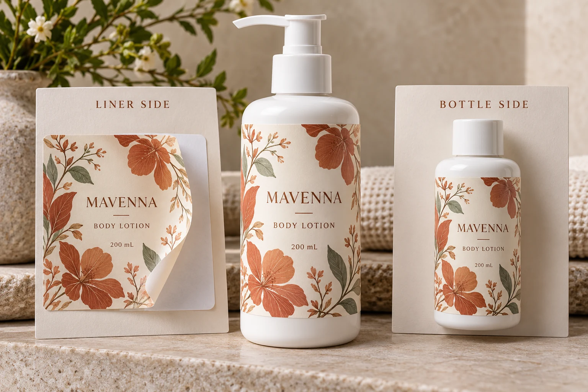

Locate the interface before choosing a correction
Ask the person reporting the concern to describe the event. Is the label remaining on its backing at the intended dispensing point? Is the issue elsewhere in the supplied roll? Or has the label already been applied and a concern appeared on the bottle?
Those observations are starting points, not diagnoses. Preserve the wording and identify where it happened before assigning it to adhesive strength. A new construction, changed setup or unrecorded handling can require different investigations.
Keep any measured result attached to its stated interface. Data about removing liner from a construction does not establish how the label adheres to the brand's coated container. Equally, a reassuring bottle sample does not explain whether the delivered web works through the intended line.
Read liner-release data as its own entry
Avery Dennison's 77844 data sheet identifies liner removal separately from adhesive tack and supplies a removal arrangement, rate and width basis. It concerns an overlaminating product and serves here only as an example of separately named measurements.
Ask the actual supplier what its release entry describes, which construction it belongs to and how it was obtained. Retain the method, units and conditions as supplied. Do not borrow the example product's release value or turn it into the required setting for a cosmetic label applicator.
If two suppliers use different arrangements or report different conditions, send the complete entries to a competent technical reviewer. Renaming both columns release force does not establish that the figures can be compared directly.
Identify the complete proposed construction
Record the face stock, adhesive and liner references, with the relevant supplier revision. Add the printed finish where it affects the construction being supplied. Identify the delivered roll or sample so the discussion refers to physical material rather than a familiar brand name.
When the liner changed, ask what else changed and what the supplier regards as equivalent. Avoid assuming that a similar colour or thickness proves the same material. Also avoid assuming that the liner is the root cause merely because its reference is new.
The co-packer roll checklist covers the surrounding physical requirements, including web and roll arrangement. Keep those requirements with this review, but do not use a correct core diameter as evidence that every other dispensing question is settled.
Give the operator an observation record, not a setting recipe
Obtain the line identity, relevant configuration and conditions from the operator. Ask for the observed event, affected material identity and the point in the process where it occurred. Photographs or a short sequence may help explain the event when they can be obtained safely under the site's procedures.
Do not prescribe tension, speed, peel geometry or sensor adjustments from a general article. The operator and equipment supplier should determine appropriate setup and safe investigation. Changing several settings while also changing material can make a later result difficult to interpret.
Where a trial is needed, agree its purpose and scope. Use an identified representative supply and record which conditions were held consistent, what changed and what the operator observed. Neither this guide nor an illustrative photograph supplies a universal pass criterion.

Use a handoff sheet that keeps the questions apart
The following record is an editorial coordination aid. Fill it with the actual supplier and operator information rather than treating its headings as a test standard.
| Field | Information to obtain | Reviewer to involve |
|---|---|---|
| Material | Face, adhesive, liner and revision | Converting or material supplier |
| Physical supply | Job, roll or sample identity | Printer and receiving team |
| Reported data | Interface, method, rate, width basis and units | Relevant technical reviewer |
| Event | What happened and where in the process | Line operator |
| Conditions | Relevant actual setup and handling history | Operator or equipment supplier |
| Focused review | One agreed question and representative material | Supplier and operator together |
| Disposition | Accepted scope, unresolved item and owner | Responsible production team |
Begin with the event and identity, then reconcile the data and planned review. If the parties are discussing different samples or interfaces, resolve that mismatch before accepting a material substitution. An explanation needs to account for the observed event, not merely fit a familiar adhesive slogan.
Keep either investigation route available
A hypothetical team with satisfactory bottle adhesion but an unresolved dispensing event should investigate the supplied web and line interaction with its technical parties. Selecting a different bottle adhesive immediately may introduce another variable without answering the original question.
A different team may have acceptable dispensing but poor results on the actual container. It needs the surface, application and use conditions investigated. A liner-release figure cannot settle that bottle-side concern.
For that second task, use the adhesive sample-planning guide. Planned removal from a used pack is another distinct decision, covered in the removable and wash-off guide.
For custom cosmetic labels, send the container, artwork, dimensions, quantity by design and receiving line requirements. Include the exact construction references and the unresolved event.
Use the inquiry form to prepare your message, with records attached separately through email or WhatsApp. Ask for a review of an identified interface on identified material. That gives the next technical conversation a useful starting point.